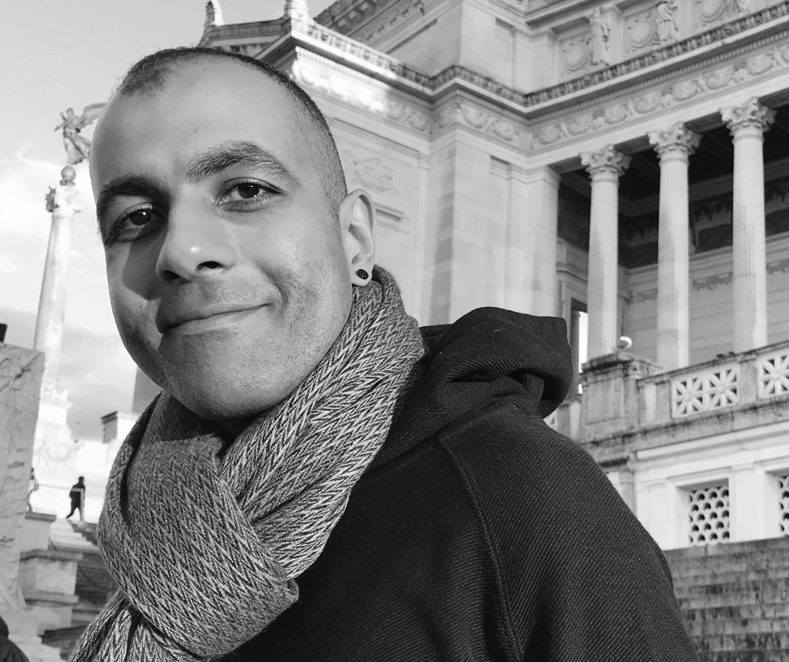

About
A little about me.
I grew up in São Paulo, Brazil, and completed my MSc and PhD at the Federal University of São Paulo (UNIFESP).
During my doctoral studies, I spent time at Massey University in New Zealand investigating links between translational control and cell-cycle progression. I then moved to Germany to join the Max Planck Institute of Molecular Physiology in Dortmund, where I studied how regulatory proteins associate with chromosomes and help maintain genome integrity during meiosis.
In 2021, I joined Tuncay Baubec’s group at the University of Zurich, moving with the group to Utrecht University in 2022. My research there focused on engineered chromatin readers, including molecular tools that detect damaged chromatin in living cells and reveal proteins associated with DNA damage.
Today, my scientific interests centre on how chromatin organisation influences DNA repair, particularly in repetitive genomic regions.
Outside research, I enjoy indoor bouldering, hiking, travelling and reading.
